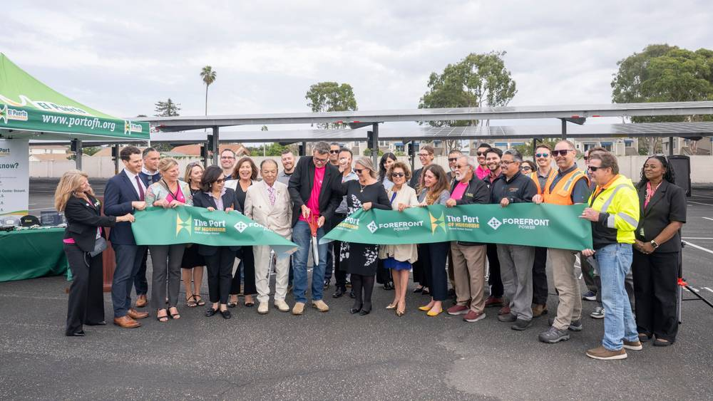
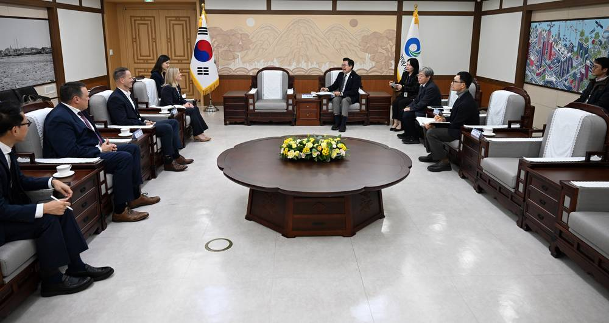
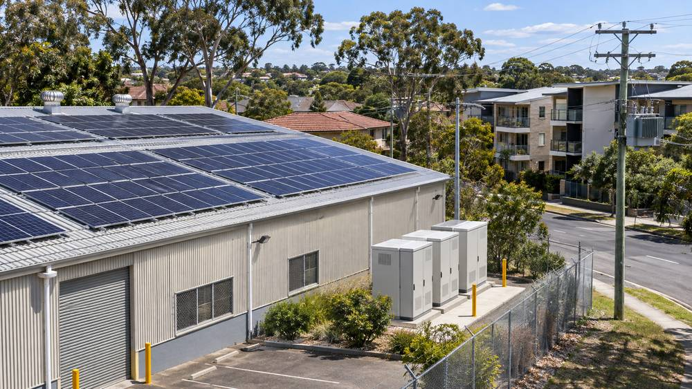
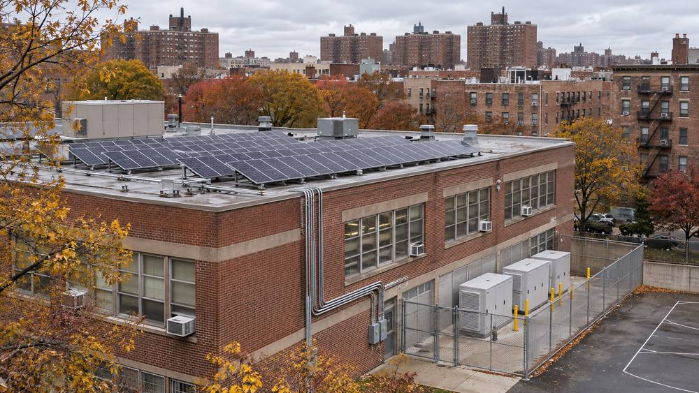

지역
수원 권선1동 공영주차장, 옥상 주차면 지붕에 44.64kW 태양광
옛 행정복지센터 부지에 지상 5층·122대 규모, 사업비 67억 원 / 전기요금 연 약 1,200만 원 절감 추산…23일부터 무료 시범운영

강원 기후변화 대응 복합센터 춘천에 개관, 한국기후변화연구원은 9월 먼저 입주
총사업비 175억 원 중 105억 원은 한강수계관리기금…연면적 3,154㎡에 기후변화도서관·창업보육·연구시설 / 2025년 3월 착공, 2026년 8월 말 건축공사 마쳐

인천 영종구, 내년 227곳에 태양광·태양열·지열 보급…총사업비 41억9,000만 원
2027년 재생에너지 융복합지원사업 A등급 선정, 국비 16억5,000만 원 / 올해 기준 주택 태양광 3kW 주민 부담은 설치비의 18%

해남군의회·농민단체, 신해남-신강진 345kV 송전선로보다 지역 소비 체계 먼저 요구
36.8km 가운데 29.2km·철탑 79기가 해남 통과, 2030년 12월 준공 목표 / 재생에너지자립도시 특별법 제정·RE100 국가산단 지정을 앞세워야

충남도, 수출 중소기업 탄소 배출량 산정·검증 돕는 전담조직 가동…철강·알루미늄부터
행정부지사 단장, 행정·기업·측정보고검증·정책자문 4개 분야 / 유럽연합 탄소국경조정제도 올해 1월 본격 시행, 12월까지 도 지원 전략

한울원전 지하수 관측정서 삼중수소 리터당 3만 베크렐, 원자력안전위원회 사건조사 착수
취수구 해수는 117베크렐 수준, 제한구역 밖 해수에선 안 나와 / 한수원, 액체 방사성폐기물 배출 배관 손상 추정

대전시, 에너지기술연구원·한전KDN과 분산에너지 협약…ESS·가상발전소로 지역 전력 수급 안정 추진
17일 대전컨벤션센터 태양광 포럼에서 업무협약, 시는 대상지 발굴·행정 지원 맡아, 250여 명 참석

영광 월평마을 등 영농형 태양광 계통 접속 지연, 전남광주시의회 서영광변전소 준공 앞당기라 요구
에너지산업본부는 한전과 준공 시기를 협의하고, 햇빛소득마을에 에너지저장장치와 가상발전소를 잇는 컨설팅을 서두르기로 했다

대전 한밭종합운동장 공영주차장 태양광, 서류마다 사업비·용량 달라 시의회 감사서 지적
박은희 시의원, 시설관리공단 감사에서 총사업비 6억 원 기준 서류 불일치 짚어…국비 공모에 뽑히고도 지방비가 모자라 포기한 이력

울주군 구영공원 주차장 태양광 11월 17일 착공 예정, 20m 앞 아파트 주민은 철회 요구
군은 반사율 5.3% 패널과 기울기 9도를 내세우고, 주민은 일부 패널 제외와 방현 유리 적용을 요구

여수시, 태양광 주택 이격거리 300m에서 200m로 줄이는 조례안 상임위 통과
도로 이격 100m 제한은 없애고 풍력 기준은 그대로 둔다, 시행령 상한 200m에 맞춰 11월 17일 본회의 의결 예정

김해시의회 태양광 시민토론회, 공영주차장·학교·산단 설치 가능 부지 조사 제안
11월 16일 토론회서 수익 지역 환원·주민참여·안전 유지관리 기준 논의, 발제자는 김해 주차장 태양광 잠재량이 경남 2위라고 밝혀

전북도, 농업기술원 종합감사서 12건 처분…영농형 태양광 설비에 농지 일시사용 협의 빠뜨려
2023년 농업진흥구역에 세운 384㎡ 설비, 개발행위허가도 없어…외부 강의 미신고 등으로 219만5,000원 회수

안성시 공유부지 주민참여형 태양광, 시장·군수·구청장협의회장상 받아
참좋은 지방자치 정책대회에서 수상…협동조합 선정 때 마을 주민 참여 비율과 수익의 마을복지 환원 계획을 평가


음성군 공영주차장 태양광, 사업비는 충북솔라링크가 조달해 군 부담 줄인다
11월 10일 한전KDN·충북개발공사·음성군 업무합의, 발전 수익은 에너지 취약계층 지원과 주민 복지에

휴니미항 913 kW 주차장 태양광 가동, 설치비 없이 20년 전력 계약
연 140만 kWh 이상 생산해 250가구 사용량 채워…항만 운영 2030년 무배출 목표 사업

울산 문무바람 개발사 헥시콘, 25일 청산 여부 주주총회에서 결정
이사회는 영업 계속을 우선 제안했지만 영업 자금 조달 능력에 중대한 불확실성을 적었고, 감사인 KPMG는 의견을 표명하지 않았다


인천시장, 오스테드 대표단 접견…어민은 협의체 종료 뒤 연락이 끊겼다고 반발
2023년 발전사업 허가를 받은 인천해상풍력 1·2호, 시 전담 인력은 3명이며 시는 구체적 논의가 없었다고 설명



케손시 태양광 58.55MW로 73% 늘었지만 지붕 태양광 보급률은 1% 아래
시청에서 공립학교·시립병원으로 넓힌 설치, 위성 분석이 추정한 지붕 잠재량은 최대 4,916MW

호주 오스그리드, 시드니·센트럴코스트 세 곳 태양광·배터리 접속 여유 지도 공개
공동체 전력망 시범 두 곳과 캐링바 포함, 세입자·아파트 주민 몫 태양광 확대 뒷받침

뉴욕시 공공 재생에너지 개발공사 설립 제안…배터리 200MW로 연 1억 7,000만 달러 절감 추산
기후·공동체연구소 등 3개 단체가 10월 28일 보고서 공개, 학교·병원·공공주택 부지에 배터리·태양광·열에너지 네트워크를 직접 개발하고 초기 출자금 1억 달러는 뉴욕주에 요청하자고 권고

독일 쾰른 오센도르프 435가구에 지붕 태양광 전기 공급…지역 기본공급 요금보다 18% 싸게
협동조합 두 곳이 건물 55동 지붕에 태양광 750kW와 저장장치 670kWh를 설치하고 9월 15일 개소식, 전 건물 가동은 연말까지


일본 농림수산성, 영농형 태양광 기본방침 고쳐 차광률 30% 미만·연 판매 50만 엔 조건 넣었다
2023년도 말 설비 농지 5,167건 중 1,221건(24%)이 영농에 지장…규슈 누적 허가는 5년 새 4.4배

소보바 부족 소방서, 태양광에 바나듐 흐름전지 더해 정전 때 최소 10시간 전기 공급
산불 위험 최고 등급 구역서 24시간 넘는 정전 겪어…0.5 MWh 저장 설비 인계

콜로라도 플러그인 태양광 비영리단체 출범, 주 법은 전력사의 설치 전 승인 요구를 금지
출력 1,920와트 이하 장치 대상, 2027년 1월 1일부터 부당한 설치 금지 제한 적용

이스트본 전역으로 넓힌 BHESCo 태양광 사업, 초기 비용 없이 설치
주택 소유자·세입자·사업장 대상, 25년 전력구매계약에 현 공급사보다 최대 25% 낮은 요금 안내


맨발 대학 설립자 벙커 로이 별세, 향년 81세
1972년 인도 틸로니아에 센터를 세워 시골 여성에게 태양광 설치·정비 교육, 2016년 본인 기고 기준 78개국 800여 명 훈련

코크 북부 메리온코트, 이웃과 지붕 태양광 공동구매 나서…먼저 한 뉴타운코트는 가구당 한 해 1,000유로 절감
뉴타운코트에서는 25가구가 패널 8장 2,100유로, 6장 1,900유로로 참여해 설치…자원봉사 모임 노스사이드 솔라의 다음 대상은 몬트노트파크


묀제 의회, 풍력 수익 재단 설립에 근소한 다수로 찬성…운영위원회 동수 구성을 정관에 넣는 조건
사업자 서한에는 사업자 2명·정치인 2명 동수, 정관 초안에는 시장 당연직과 위원 5~13명뿐…1년 전 재단 방식을 배제한 결정은 뒤집혀

일본 사카타 영농형 태양광 심포지엄, 논 위 패널 670장 아래서 쌀 기르는 농민 사례 소개
일본 농지 일시 전용 허가 2022년도까지 누적 5,351건…한국 영농형 태양광 법은 12월 시행 예정


대전시, 17일 세계태양광총회 특별세션 포럼…에너지연·한전KDN과 분산에너지 협약 예정
2부 '태양광의 가치를 지역과 나누다'에서 에너지자립마을·산업단지 지붕 태양광 사례 발표 / 대전 전력자립률 1.87%(2021년)

地域
水原・勧善1洞の公営駐車場、屋上駐車場の屋根に44.64kWの太陽光
旧行政福祉センター跡地に地上5階・122台規模、事業費67億ウォン / 電気料金は年約1,200万ウォン節減の見込み…23日から無料で試験運営
江原道の気候変動対応複合センターが春川に開館、韓国気候変動研究院は9月に先行入居
総事業費175億ウォンのうち105億ウォンは漢江水系管理基金…延べ床面積3,154㎡に気候変動図書館・創業支援・研究施設 / 2025年3月着工、2026年8月末に建築工事完了
仁川・永宗区、来年227か所に太陽光・太陽熱・地熱を普及…総事業費41億9,000万ウォン
2027年再生エネルギー融複合支援事業でA等級、国費16億5,000万ウォン / 今年の基準で住宅用太陽光3kWの住民負担は設置費の18%
海南郡議会と農民団体、新海南-新康津345kV送電線より地域消費の体制づくりを先に求める
36.8kmのうち29.2km・鉄塔79基が海南を通過、2030年12月完成目標 / 再生エネルギー自立都市特別法の制定・RE100国家産業団地指定を先に
忠清南道、輸出中小企業の炭素排出量の算定・検証を支援する専任組織を始動…鉄鋼・アルミニウムから
行政副知事が団長、行政・企業・測定報告検証・政策諮問の4分野 / EU炭素国境調整措置は今年1月に本格施行、道は12月までに支援戦略
蔚珍ハンウル原発の地下水観測井で三重水素1リットル当たり3万ベクレル、原子力安全委員会が事象調査に着手
取水口の海水は117ベクレル程度、制限区域外の海水からは不検出 / 韓水原、液体放射性廃棄物の排出配管の損傷と推定
大田市、エネルギー技術研究院・韓電KDNと分散エネルギー協約…ESS・仮想発電所で地域の電力需給安定を目指す
17日、大田コンベンションセンターの太陽光フォーラムで業務協約、市は対象地の発掘と行政支援を担当、250人余りが参加
霊光・月坪村など営農型太陽光の系統接続が遅れ、全南光州市議会が西霊光変電所の完成前倒しを要求
エネルギー産業本部は韓電と完成時期を協議し、陽光所得村にエネルギー貯蔵装置と仮想発電所をつなぐコンサルティングを急ぐ
大田・ハンバッ総合運動場の公営駐車場太陽光、書類ごとに事業費・容量が違うと市議会監査で指摘
朴恩姫市議、施設管理公団の監査で総事業費6億ウォン基準の書類の不一致を指摘…国費公募に選ばれながら地方費不足で断念した経緯
金海市議会の太陽光市民討論会、公営駐車場・学校・産業団地の設置可能用地の調査を提案
11月16日の討論会で収益の地域還元・住民参加・安全維持管理基準を議論、発題者は金海の駐車場太陽光ポテンシャルが慶尚南道2位と説明
全北道、農業技術院の総合監査で12件処分…営農型太陽光設備で農地の一時使用協議を欠落
2023年に農業振興区域へ建てた384㎡の設備、開発行為許可もなし…外部講義の未申告などで219万5,000ウォン回収
豪オースグリッド、シドニー・セントラルコースト3地域の太陽光・蓄電池の接続余力マップを公開
コミュニティ電力網の試験2地域とカリンバを対象に、賃借人・集合住宅住民向けの太陽光拡大を後押し
ニューヨーク市に公共の再エネ開発公社を設立する提案…蓄電池200MWで年1億7,000万ドルの節減を試算
気候・コミュニティ研究所など3団体が10月28日に報告書を公表、学校・病院・公営住宅の敷地で蓄電池・太陽光・熱エネルギーネットワークを直接開発、初期出資金1億ドルはニューヨーク州に要請するよう勧告
独ケルン・オッセンドルフの435世帯に屋根の太陽光電力を供給…地域の基本供給料金より18%安く
協同組合2団体が建物55棟の屋根に太陽光750kWと蓄電池670kWhを設置、9月15日に開所式、全棟の稼働は年末まで
日本の農水省、営農型太陽光の基本方針を改定 遮光率30%未満・年間販売50万円以上を条件に
2023年度末の設置農地5,167件のうち1,221件(24%)で営農に支障…九州の累計許可は5年で4.4倍
「裸足の大学」創設者バンカー・ロイ氏死去、81歳
1972年にインドのティロニアにセンターを設け、農村の女性に太陽光の設置・保守を教える。本人の2016年寄稿では78カ国の800人超を訓練
コーク北部のメリオン・コート、隣人と屋根の太陽光を共同購入へ…先行したニュータウン・コートは1世帯あたり年1,000ユーロ節約
ニュータウン・コートでは25世帯がパネル8枚2,100ユーロ、6枚1,900ユーロで参加し設置…ボランティアグループ「ノースサイド・ソーラー」の次の対象はモンテノット・パーク
メーネゼー議会、風力収益財団の設立に僅差の多数で賛成…運営委員会の同数構成を定款に盛り込むことが条件
事業者の書簡には事業者2人・政治家2人の同数、定款草案には市長の当然職と委員5〜13人のみ…1年前に財団方式を除外した決定は覆る
山形・酒田の営農型太陽光シンポジウム、水田の上にパネル670枚を張ってコメを育てる農家の事例を紹介
日本の農地一時転用許可は2022年度までに累計5,351件…韓国の営農型太陽光法は12月施行予定
大田市、17日に世界太陽光会議の特別セッションでフォーラム…エネルギー研・韓電KDNと分散型エネルギー協約へ
第2部「太陽光の価値を地域と分かち合う」でエネルギー自立村・産業団地屋根置き太陽光の事例発表 / 大田の電力自給率1.87%（2021年）
地方
水原劝善1洞公营停车场在屋顶停车层加盖顶棚，安装44.64千瓦太阳能
利用原行政福利中心用地建成地上5层、可停122辆车，总投资67亿韩元 / 预计每年节省电费约1,200万韩元…23日起免费试运营
江原气候变化应对综合中心在春川开馆，韩国气候变化研究院9月已先行入驻
总投资175亿韩元中105亿韩元来自汉江水系管理基金…建筑面积3,154平方米，设气候变化图书馆、创业孵化与研究设施 / 2025年3月开工，2026年8月底完成建筑工程
仁川永宗区明年将在227处推广太阳能光伏、太阳能热和地热…总投资41亿9,000万韩元
获评2027年可再生能源融合支援项目A级，国费16亿5,000万韩元 / 按今年标准，住宅3kW光伏居民负担为安装费的18%
海南郡议会与农民团体要求先建立本地消纳体系，再建新海南—新康津345kV输电线路
36.8公里中29.2公里、79座铁塔经过海南，目标2030年12月竣工 / 应先制定可再生能源自立城市特别法、指定RE100国家产业园区
忠清南道成立专门组织，帮助出口中小企业核算与核查碳排放…从钢铁和铝开始
行政副知事任组长，分行政、企业、测量报告核查和政策咨询4个领域 / 欧盟碳边境调节机制今年1月全面实施，道将在12月前制定支援战略
大田Hanbat综合运动场公共停车场光伏：各份文件事业费与容量不一，在市议会监察中被指出
朴恩姬市议员在设施管理公团监察中指出以总事业费6亿韩元为基准的文件不一致…入选国家补助项目后因地方配套资金不足而放弃的经过
纽约市拟设公共可再生能源开发公司…200兆瓦电池估算每年可省1.7亿美元
气候与社区研究所等三家团体10月28日发布报告，主张在学校、医院和公共住房场地直接开发电池、光伏和热能网络，并建议向纽约州申请1亿美元初始出资
科克北部梅里恩苑邻里共同团购屋顶光伏…先行的新镇苑每户每年节省1,000欧元
新镇苑有25户参与，8块板2,100欧元、6块板1,900欧元并完成安装…志愿团体“北区太阳能”的下一个对象是蒙特诺特公园
默讷湖镇议会以微弱多数支持风电收益基金会设立…条件是把管理委员会对等组成写入章程
运营商信函写明运营商2人、政界人士2人对等，章程草案只有市长当然任职和5至13名委员…一年前排除基金会方式的决定已被推翻
大田市17日举办世界光伏大会特别分会论坛…将与能源研究院、韩电KDN签署分布式能源协议
第二部分“与地方分享光伏价值”将介绍能源自立村和产业园区屋顶光伏案例 / 大田电力自给率1.87%（2021年）
Regions
Suwon's Gwonseon 1-dong public car park puts 44.64kW of solar on a roof over its top deck
Five-storey, 122-space car park on a former community centre site cost 6.7 billion won / City estimates about 12 million won a year in power savings; free trial from Nov. 23
Gangwon opens climate change response centre in Chuncheon; Korea Research Institute on Climate Change moved in first in September
10.5 billion won of the 17.5 billion won project cost came from the Han River Basin Management Fund; 3,154 m² of floor space for a climate change library, start-up incubation and research / Construction began in March 2025 and building works finished at the end of August 2026
Incheon's Yeongjong-gu to put solar, solar thermal and geothermal at 227 sites next year, with 4.19 billion won budget
District wins top A grade in 2027 renewable energy convergence programme, 1.65 billion won national funding / Under this year's terms, residents bear 18% of the cost of a 3kW home solar system
Haenam council and farmers' groups demand local-use system before Sinhaenam–Singangjin 345kV line
29.2km and 79 towers of the 36.8km line cross Haenam, with completion targeted for December 2030 / Renewable self-sufficient city act and RE100 national industrial complex should come first, groups say
South Chungcheong sets up task force to help exporting SMEs calculate and verify carbon emissions, starting with steel and aluminium
Vice governor heads four teams on administration, business support, measurement-reporting-verification and policy advice / EU Carbon Border Adjustment Mechanism fully applied since January; province to draw up support strategy by December
Tritium at 30,000 becquerels per litre found in Hanul nuclear plant groundwater well; Nuclear Safety and Security Commission opens probe
Seawater at the intake measured about 117 becquerels; none detected outside the restricted area / KHNP suspects a damaged liquid radioactive waste discharge pipe
Daejeon signs distributed energy pact with energy research institute and KEPCO KDN, aiming to stabilize local power supply with storage and virtual power plants
Memorandum signed on the 17th at a solar forum at Daejeon Convention Center; the city will find sites and provide administrative support; more than 250 attended
Grid Connection Delays Hit Agrivoltaics at Yeonggwang's Wolpyeong Village; Jeonnam-Gwangju Council Asks for Earlier West Yeonggwang Substation
The energy industry headquarters is negotiating the completion date with KEPCO and will speed up consulting that links sunlight income villages to energy storage and a virtual power plant
Daejeon Hanbat Stadium Car-Park Solar: Cost and Capacity Differ Across Documents, City Council Audit Finds
Councillor Park Eun-hee flags mismatched filings built on a KRW 600 million budget at the facilities corporation audit; the project was once dropped for lack of local funds after winning a national grant
Ulju County Plans Nov. 17 Start for Guyeong Park Car-Park Solar as Residents 20 m Away Demand Withdrawal
County cites 5.3% reflectance panels and a 9-degree tilt; residents ask for some panels to be dropped and anti-glare glass
Yeosu Committee Passes Ordinance Cutting Solar Setback From Homes From 300 to 200 Meters
Road setback limit of 100 meters is dropped and wind standards stay; matching the 200-meter cap in the enforcement decree, final vote set for Nov. 17
Gimhae council solar forum proposes surveying sites at public car parks, schools and industrial parks
Nov. 16 forum covers returning revenue locally, resident participation and safety and maintenance standards; a speaker says Gimhae ranks second in the province for car-park solar potential
Jeonbuk province issues 12 actions in agricultural institute audit…agrivoltaic array lacked temporary farmland-use consultation
384㎡ array built in a farmland promotion zone in 2023 also had no development permit…2.195 million won recovered over unreported lectures and other items
Anseong's resident-participation solar on shared public land wins National Association of Mayors award
Prize at the Good Local Autonomy Policy Contest; cooperatives were chosen by nearby villagers' participation rate and plans to return profits to village welfare
Asan revises city planning ordinance, cutting solar setback from homes from 500m to 200m
Road setback rule removed and further easing for projects residents approve…national decree also caps the residential setback at 200m
Ongjin County Revives Yeongheung Nae 7-ri Sunlight Income Village and Seeks Fix for Island Grid Links
Baengnyeong Island lost power to 2,600 households for up to eight hours on July 31; county head signals talks with KEPCO and a study
Eumseong public car park solar: Chungbuk Solar Link to raise project funds, easing the county's burden
KEPCO KDN, Chungbuk Development Corporation and Eumseong County sign agreement on Nov. 10; revenue to support energy-poor households and resident welfare
Port of Hueneme switches on 913 kW solar carport, with a 20-year power contract and no installation cost
More than 1.4 million kWh a year, enough for 250 homes, under the port's goal of zero-emission operations by 2030
Hexicon, Developer of Ulsan's Munmu Baram Wind Project, to Decide on Liquidation at Shareholder Meeting on the 25th
Board proposes continuing operations but cites material uncertainty over operating funds; auditor KPMG gives no opinion
North Jeolla discusses batteries and virtual power plants with firms and KEPCO to ease grid saturation
LS Electric and others attend Nov. 13 provincial meeting; grid access for sunlight income villages also on the agenda
Incheon mayor meets Ørsted delegation, fishers say contact ended after the councils closed
Incheon Offshore Wind 1 and 2 got a generation licence in 2023; the city has 3 dedicated staff and says no specific talks took place
Haman Local Public Corporation to build solar on three Haman County public car parks, targeting completion in 2030
Hamju Park, Haman Sports Center and Chilwon Guseong sites chosen; county handles administrative support
Incheon Urban Development Corporation signs deal for 5.7 megawatts of solar at two water plants
Three-party agreement with waterworks headquarters and JH Energy; city council vote due in first half of next year
Seoul council asks Seoul Energy Corp. to finish surveys of 40 public car parks
The utility moved from a 64.9 billion won loss in 2023 to profit, but customer satisfaction fell to 79.4 in 2025
Namwon councillor Roh Hyeon-i plans ordinance to return public car park solar income
About 30 residents and experts attend Nov. 10 forum at city council hall; cooperative setup and local return of income discussed
Quezon City Solar Up 73% to 58.55MW, but Rooftop Solar Adoption Stays Below 1%
Installations spread from city hall to public schools and city hospitals; satellite analysis puts rooftop potential at up to 4,916MW
Australia's Ausgrid Publishes Map of Solar and Battery Connection Headroom for Three Areas in Sydney and the Central Coast
Map covers two Community Power Network trial areas plus Caringbah, supporting more solar for renters and apartment residents
Proposal for a Public Renewable Developer in New York City Estimates 200MW of Batteries Could Save $170 Million a Year
Three groups led by the Climate and Community Institute released the report on October 28, urging the city to build batteries, solar and thermal energy networks on school, hospital and public housing sites and to ask the state for $100 million in initial capital
Cologne's Ossendorf: Rooftop Solar Power for 435 Homes at 18% Below the Local Basic Supply Rate
Two cooperatives put 750kW of solar and 670kWh of storage on 55 buildings and held an opening on Sept. 15; all buildings are due online by year-end
Yeosu Unveils Energy Transition Plan for 40 Inhabited Islands, With Public-Land Solar From 2027
Plans split islands into 25 linked to the KEPCO grid and 15 that are not
Japan's Agriculture Ministry Revises Agrivoltaics Policy, Adding Under-30% Shading and ¥500,000 Annual Sales Conditions
At the end of FY2023, 1,221 of 5,167 equipped farm sites (24%) had farming problems; Kyushu's cumulative permits rose 4.4-fold in five years
Soboba Tribal Fire Station Adds a Vanadium Flow Battery to Its Solar Power, Securing at Least 10 Hours of Electricity During Outages
Extreme fire-threat zone has seen outages of more than 24 hours…0.5 MWh storage system handed over
Colorado Plug-In Solar Nonprofit Launches as State Law Bars Utilities From Requiring Approval Before Installation
Law covers devices of up to 1,920 watts; limits on unreasonable bans apply from 1 January 2027
BHESCo Extends Its Solar Scheme to All of Eastbourne, With No Upfront Cost
Open to homeowners, tenants and businesses; 25-year power purchase agreement at rates BHESCo says are up to 25% below current suppliers
Gangwon Provincial Council Asks Province to Confirm Grid Access Early for 46 Sunlight Income Villages
Councillor Lee Byeong-gu reviews grid connection for the 92.4 billion won programme at the November 10 industry bureau audit
Barefoot College Founder Bunker Roy Dies at 81
He set up a centre in Tilonia, India, in 1972 that taught rural women to install and maintain solar systems; by his own 2016 account, over 800 women from 78 countries were trained
Merrion Court on Cork's Northside Joins Group Rooftop Solar Buying; Earlier Newtown Court Saves About 1,000 Euros a Year Per Household
At Newtown Court, 25 households joined at 2,100 euros for 8 panels or 1,900 euros for 6 and had them installed; volunteer group Northside Solar's next target is Montenotte Park
ClientEarth Files Complaints With European Commission Against Bulgaria and Croatia
Croatia has only three officially registered citizen energy communities... same complaint follows Poland and Hungary in July
Möhnesee Council Backs Wind-Revenue Foundation by a Narrow Majority, on Condition That Equal Board Seats Go into the Statutes
Operators' letter promises two operators and two politicians; draft statutes list only the mayor ex officio and 5 to 13 members; a council decision of a year ago excluding foundations was reversed
Sakata Agrivoltaics Symposium Hears from Farmer Growing Rice Under 670 Panels Above His Paddy
Japan's farmland temporary-conversion permits total 5,351 through fiscal 2022…Korea's agrivoltaics act is due to take effect in December
Japan's Saga City Sets Up Local Power Company to Sell Waste-Plant Electricity, Holding 52%
About 16,000 MWh a year bound for 113 public facilities will be sold by a city-backed firm; supply to start in 2027
Daejeon to Hold World Photovoltaic Conference Special-Session Forum on Nov. 17, Plans Distributed-Energy Pact With KIER and KEPCO KDN
Second session, "Sharing the Value of Solar With the Community," to present an energy self-reliant village and industrial-park rooftop solar / Daejeon's power self-sufficiency 1.87% (2021)